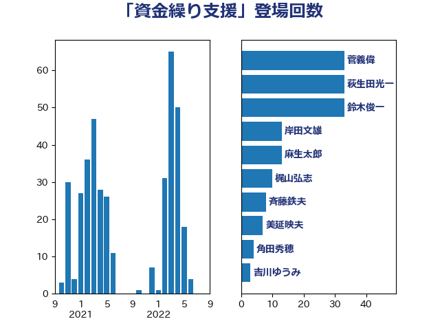

単語「資金繰り支援」

| 菅義偉 | 自由民主党 | 33 回 |
| 萩生田光一 | 自由民主党 | 33 回 |
| 鈴木俊一 | 自由民主党 | 33 回 |
| 岸田文雄 | 自由民主党 | 13 回 |
| 麻生太郎 | 自由民主党 | 13 回 |
| 梶山弘志 | 自由民主党 | 10 回 |
| 斉藤鉄夫 | 公明党 | 8 回 |
| 美延映夫 | 日本維新の会 | 7 回 |
| 角田秀穂 | 公明党 | 4 回 |
| 吉川ゆうみ | 自由民主党 | 3 回 |
| 大家敏志 | 自由民主党 | 3 回 |
| 津島淳 | 自由民主党 | 3 回 |
| 細田健一 | 自由民主党 | 3 回 |
| 赤澤亮正 | 自由民主党 | 3 回 |
| 赤羽一嘉 | 公明党 | 3 回 |
| 佐藤啓 | 自由民主党 | 2 回 |
| 大塚耕平 | 国民民主党 | 2 回 |
| 宗清皇一 | 自由民主党 | 2 回 |
| 小倉將信 | 自由民主党 | 2 回 |
| 山田賢司 | 自由民主党 | 2 回 |
| 平木大作 | 公明党 | 2 回 |
| 杉久武 | 公明党 | 2 回 |
| 枝野幸男 | 立憲民主党 | 2 回 |
| 江島潔 | 自由民主党 | 2 回 |
| 滝波宏文 | 自由民主党 | 2 回 |
| 石井章 | 日本維新の会 | 2 回 |
| 神田潤一 | 自由民主党 | 2 回 |
| 竹内真二 | 公明党 | 2 回 |
| 笠井亮 | 日本共産党 | 2 回 |
| 簗和生 | 自由民主党 | 2 回 |
| 西村康稔 | 自由民主党 | 2 回 |
| 西田実仁 | 公明党 | 2 回 |
| 長坂康正 | 自由民主党 | 2 回 |
| 三浦信祐 | 公明党 | 1 回 |
| 中山展宏 | 自由民主党 | 1 回 |
| 中西健治 | 自由民主党 | 1 回 |
| 伊藤渉 | 公明党 | 1 回 |
| 佐藤英道 | 公明党 | 1 回 |
| 勝部賢志 | 立憲民主党 | 1 回 |
| 和田義明 | 自由民主党 | 1 回 |
| 城井崇 | 立憲民主党 | 1 回 |
| 堀井巌 | 自由民主党 | 1 回 |
| 大西英男 | 自由民主党 | 1 回 |
| 安江伸夫 | 公明党 | 1 回 |
| 小宮山泰子 | 立憲民主党 | 1 回 |
| 小沼巧 | 立憲民主党 | 1 回 |
| 山本博司 | 公明党 | 1 回 |
| 山添拓 | 日本共産党 | 1 回 |
| 岡本三成 | 公明党 | 1 回 |
| 岩田和親 | 自由民主党 | 1 回 |
| 平沢勝栄 | 自由民主党 | 1 回 |
| 庄子賢一 | 公明党 | 1 回 |
| 後藤茂之 | 自由民主党 | 1 回 |
| 星野剛士 | 自由民主党 | 1 回 |
| 朝日健太郎 | 自由民主党 | 1 回 |
| 松野博一 | 自由民主党 | 1 回 |
| 梅谷守 | 立憲民主党 | 1 回 |
| 森本真治 | 立憲民主党 | 1 回 |
| 武田良太 | 自由民主党 | 1 回 |
| 浜地雅一 | 公明党 | 1 回 |
| 片山さつき | 自由民主党 | 1 回 |
| 矢倉克夫 | 公明党 | 1 回 |
| 石井啓一 | 公明党 | 1 回 |
| 石川博崇 | 公明党 | 1 回 |
| 秋野公造 | 公明党 | 1 回 |
| 舞立昇治 | 自由民主党 | 1 回 |
| 藤巻健太 | 日本維新の会 | 1 回 |
| 藤田文武 | 日本維新の会 | 1 回 |
| 西銘恒三郎 | 自由民主党 | 1 回 |
| 赤木正幸 | 日本維新の会 | 1 回 |
| 里見隆治 | 公明党 | 1 回 |
| 野上浩太郎 | 自由民主党 | 1 回 |
| 野村哲郎 | 自由民主党 | 1 回 |
| 階猛 | 立憲民主党 | 1 回 |
| 青山周平 | 自由民主党 | 1 回 |
| 馬淵澄夫 | 立憲民主党 | 1 回 |